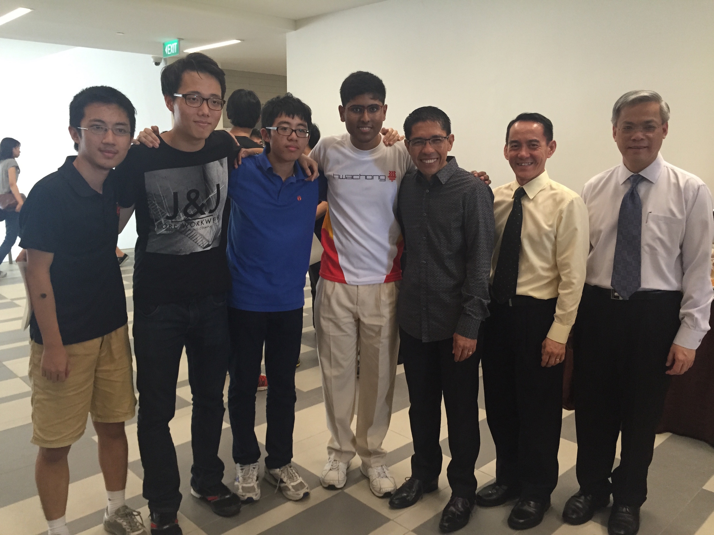
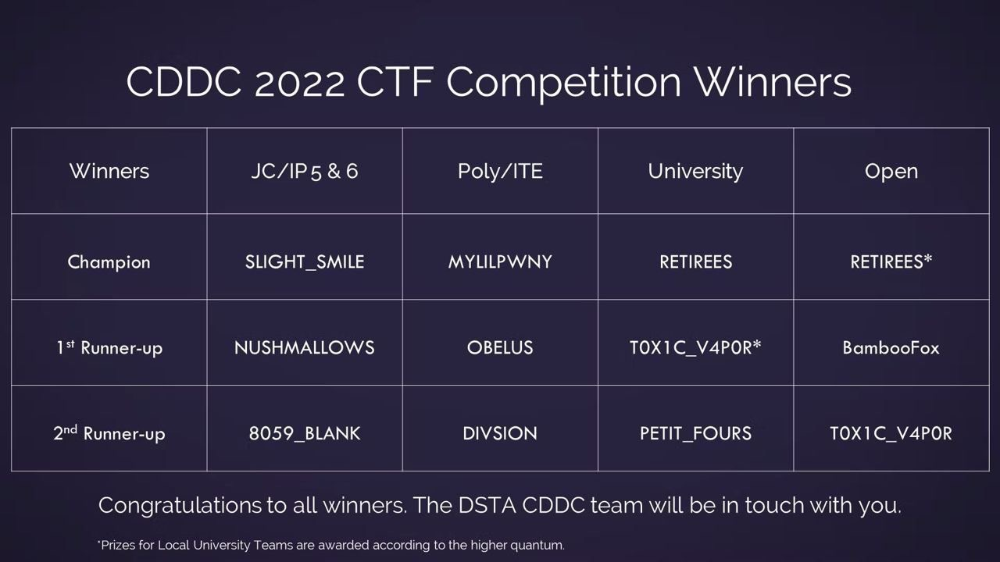
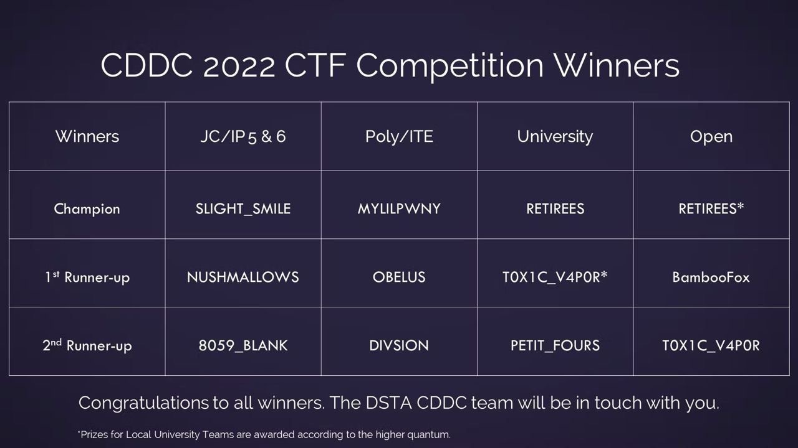
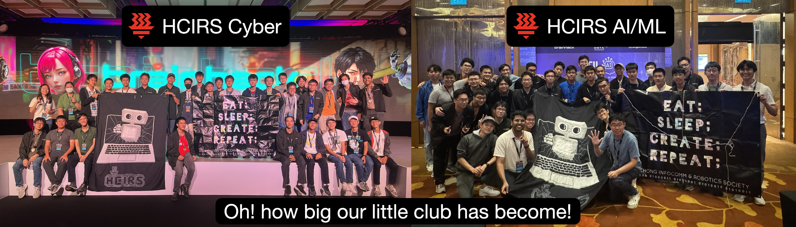

10 years of DSTA Capture The Flag (CTF) and
Artificial Intelligence (AI) competitions
2015

Our first CTF ever, we were 3rd in the
Junior College Category
Cyber Defenders Discovery Camp
(CDDC) 2015
2016
Champions of the Junior College Category
Cyber
Defenders Discovery Camp (CDDC) 2016
2017
Champions of the University and Polytechnic Category
Cyber Defenders Discovery Camp (CDDC) 2017
2018
Top 20 in University and Polytechnic Category
Cyber
Defenders Discovery Camp (CDDC) 2018
( a series of misfortunate events )
2019
Our first AI/ML competition ever, clinched
2nd place in the Tertiary Category
BrainHack 2019
Today I Learned (TIL) Artificial Intelligence Competition
( some of our members were part of the organising
committee
for CDDC 2019 so we couldn't participate in the CTF )
2020

"Most Creative Vlog" Award & 4th Place in the Tertiary
Category
BrainHack 2020 Today I Learned (TIL) Artificial
Intelligence Competition
( with the COVID19
pandemic and robots this time!
some of our members were part of the organising committee
for CDDC 2020 so we couldn't participate in the CTF )
2021
Champion & "Best Presentation" Award in the Tertiary
Category
BrainHack 2021 Today I Learned (TIL) Artificial
Intelligence Competition
Six-way tie for first place in the Senior Category
(
but they gave us 6th place... read more
[1]
[2]
)
BrainHack 2021 Cyber Defenders Discovery Camp (CDDC)
( COVID19 at its peak, so everything was remote;
no group pic 😭 )
2022
 

2nd Place in the Tertiary Category
BrainHack 2022
Today I Learned (TIL) Artificial Intelligence Competition
2nd Place in the University and Polytechnic Category
BrainHack 2022 Cyber Defenders Discovery Camp (CDDC)
( COVID19 still a thing, but the robotics
component was in-person! )
2023
Oops, we were on a plane to a vacation on the morning of the
competition!
BrainHack 2023 Missing In Action (MIA) Vacation Hiatus!
( holiday booked before competition was announced; tickets
neither refundable nor changeable 😅 )
2024
We are back, playing both CDDC 2024 and TIL 2024!
Our 10th year of DSTA CTF and AI competitions.
2nd Place overall across all teams / categories
BrainHack 2024 Cyber Defenders Discovery Camp (CDDC)
4th Place in the Advanced Category (by a slim margin of 3
wrong predictions!)
BrainHack 2024 Today I Learned (TIL) Artificial
Intelligence Competition
The friends we made along the way!

In 2015 we took over the administration of the then Hwa
Chong Infocomm Society.
We reorganised the club, and renamed it to Hwa Chong
Infocomm and Robotics Society (HCIRS).
We have been working with them since then as exco and
alumni,
and they have been our friends and competitors in the DSTA
competitions.
It has grown from a roster of just over 10 members to over
100 members today.
Many of our members have gone on to become exco members of
other teams like
NUS Greyhats, NUS Hackers, etc. and
work in private and government sectors
protecting our nation's cyber and physical
infrastructure.
Our friends and competitors from NUS Greyhats
( National University of Singapore )
We've come a long way since 2015, and we are looking forward
to whatever the future holds for us!
With love, T0X1C V4P0R. Hack the planet!